Презентация к лабораторной работе №6
Цель работы
Развить навыки администрирования ОС Linux. Получить первое практическое знакомство с технологией SELinux1.
Проверить работу SELinx на практике совместно с веб-сервером
Apache.
Выполнение работы
Команды getenforce и seastatus

Запуск сервиса Apache2

Контекст безопасности Apache2
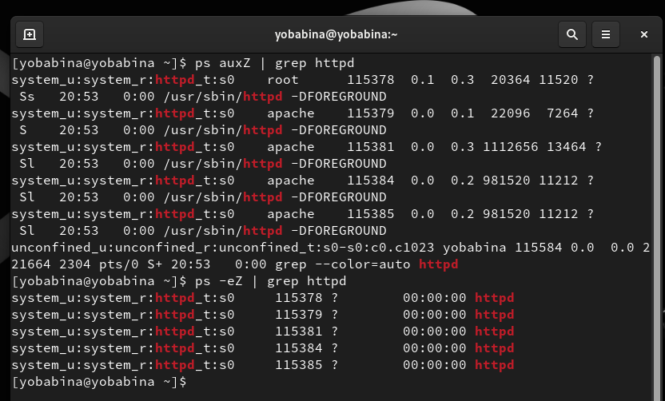
Текущее состояние переключателей для Apache2
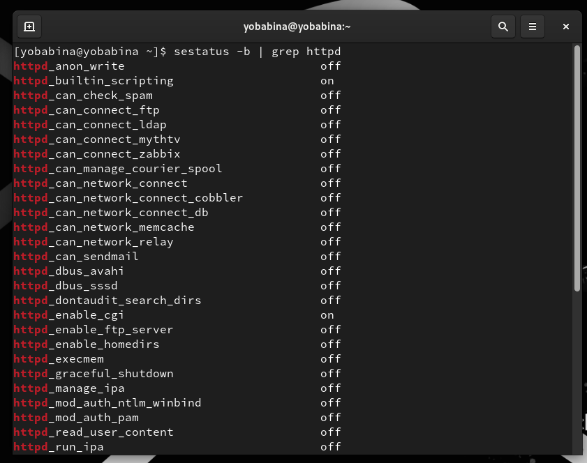
Команда seinfo
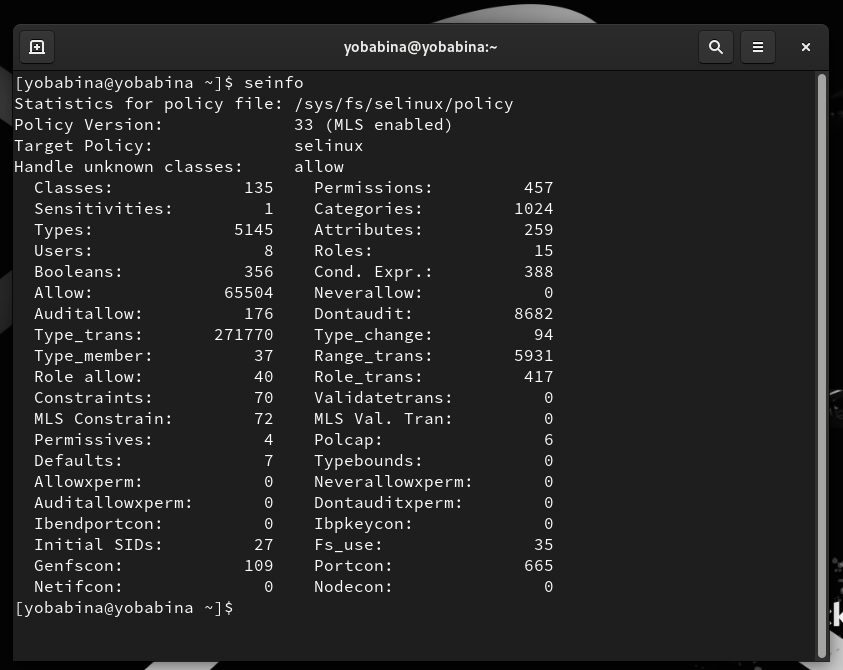
Тип файлов и поддиректорий

Файл test.html
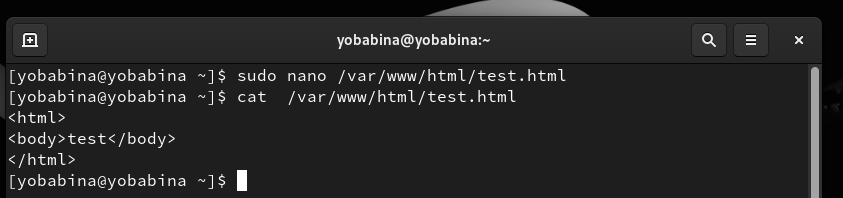
Контекст файла
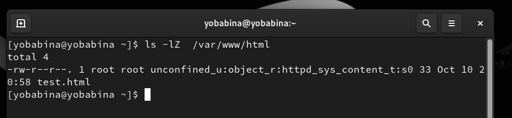
Обращение к веб-серверу
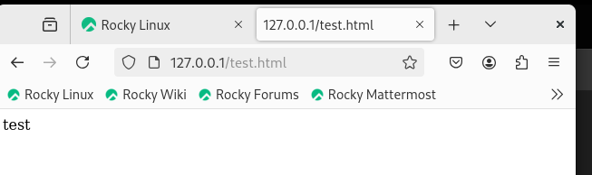
Контекст файла

Изменение контекста файла

Повторное обращение к веб-серверу
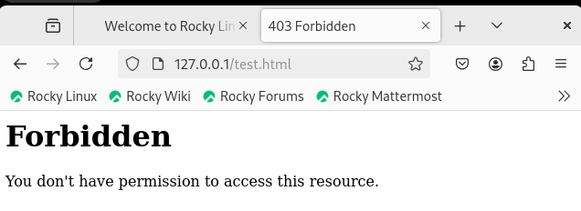
Просмотр логов
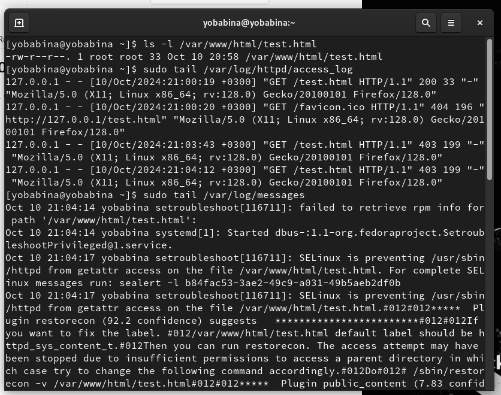
Изменение прослушиваемого порта
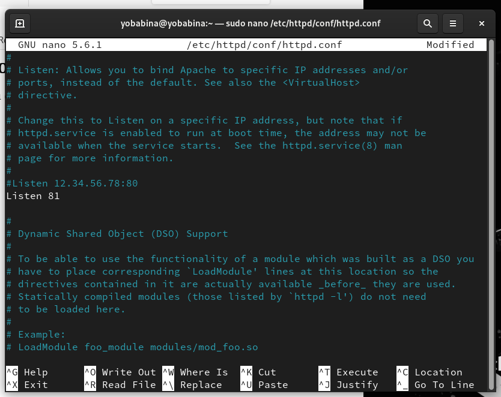
Перезапуск Apache2
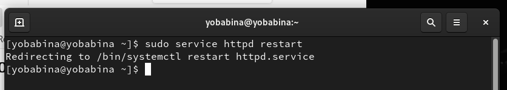
Анализ логов
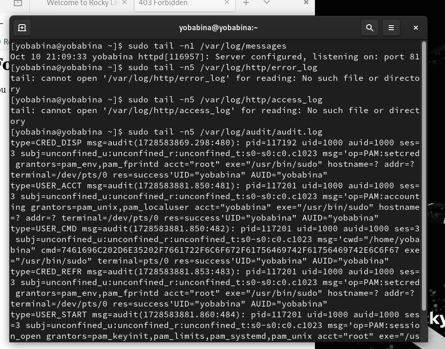
Просмотр доступных портов
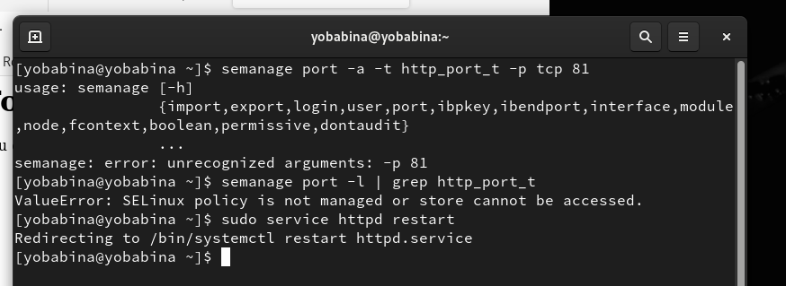
Контекст файла

Изменение конфигурационного файла Apache2

Удаление привязки к порту и файла

Вывод
В рамках выполнения данной лабораторной работы я развила навыки администрирования ОС Linux. Получила первое практическое знакомство с технологией SELinux1.
Проверила работу SELinx на практике совместно с веб-сервером
Apache.